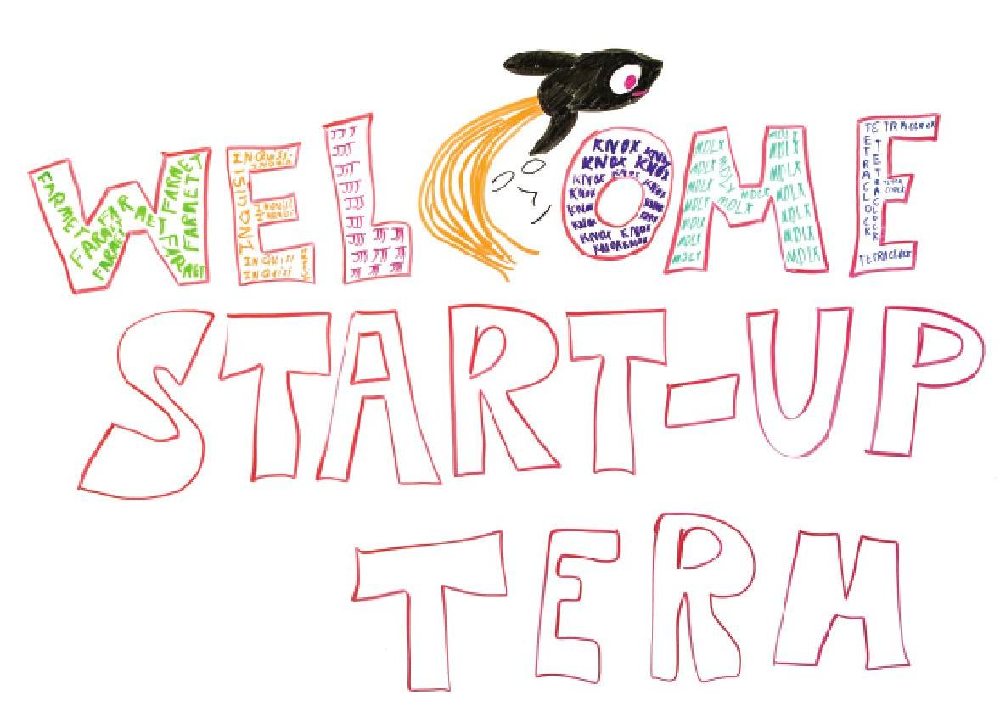

Jaime Spacco
Associate Professor and Chair
Department of Computer Science
Knox College
Galesburg, IL 61401
I am an inclusive educator of computer science!
CS is for everyone! You belong in this discipline.
Check out some of the projects I work on:

Knoxel: Minecraft-inspired coding for intro CS
Have you ever wanted to learn 3D arrays by writing code in Python
or Javascript that creates structures in a voxel based world?
You have? Great! Then check out Knoxel, our
voxel-based coding environment.
Full disclosure: We also wrote two versions of a server-side
Minecraft mod, one for the now-defunct Canarymod and one for Spongepowered,
that put all of this inside a full Minecraft server. But, sadly, our mods
were never entirely stable and it was hard to keep the server up and running.

Peer Instruction: Active Learning ("flipped classroom") in CS
I have adopted Peer Instruction (PI), an active learning pedagogy.
In 2012, I worked with Leo Porter, Beth Simon, and others on Peer Instruction (PI), an
active learning pedagogy initially developed by Eric Mazur at Harvard to
teach introductory Physics. The PI community has shown that PI is effective
in CS Education, including higher exam scores, lower WDF rates, and higher retention
in the major.

Startup Term: Interdisciplinary Entrepreneurship in the Liberal Arts
I worked with John Dooley,
John Spittel,
and Tim Stedman
to create Startup Term.
Startup Term is an immersive, Interdisciplinary 10-week experience where teams of students
found a company and work on their business for all of their
academic credit. Instead of studying in a classroom, teams meet 5 days a week in an office suite off-campus,
and instead of final exams, students give a Sharktank-style final pitch to a panel
of judges and potential investors.
During the term, students handle everything a fledgling business might need to
handle, such as partnership agreements, banking, intellectual property,
terms of service, market research, financial projections, and so on.
Startup term is a fantastic! It's the most fun thing I've worked on in academia.
Increasing Diversity and Inclusivity in STEM Education
Knox was selected to the AAC&U's TIDES program, which was funded by a $4.3 million gift
from the Helmsley Foundation. Only 20 schools out of over 200 who submitted grant
proposals were selected.
Full disclosure: We were an "honorable mention", which means we didn't get
the $250K we asked for, but they paid for our institution to attend the
TIDES conference every summer, and we incorporated much of what we learned
into our CS courses. It was a great opportunity.